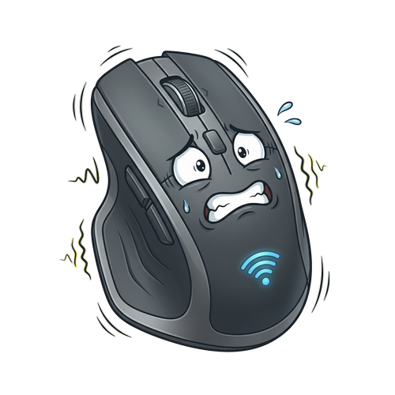

Schließen Sie Ihren M5Stamp S3 per USB-Kabel an und installieren Sie die Firmware direkt über den Browser (Chrome oder Edge):
⚠️ Bitte öffnen Sie diese Seite am PC mit Google Chrome oder Microsoft Edge, um das Gerät zu installieren.
⚠️ Bitte rufen Sie diese Seite über eine gesicherte HTTPS-Verbindung (oder localhost) auf.

☕ Projekt unterstützen
Steady-Bridge ist komplett kostenlos. Während die Installation läuft: Wenn Ihnen oder Ihren Angehörigen dieses Tool hilft, freue ich mich sehr über einen kleinen Kaffee!